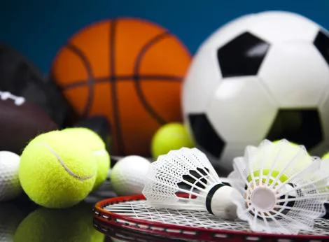

Esporte na escola
energia, disciplina e futuro.
Publicado em 23 de julho de 2026

fonte da imagem: Brasil Escola
Na escola, o esporte é uma das formas mais completas de cuidar do corpo e da cabeça, tanto para quem estuda em turno diurno quanto em tempo integral. Ele não serve apenas para “cansar” o aluno ou preencher horário: treinar regularmente melhora a saúde física, ajuda a controlar o estresse e desenvolve hábitos importantes para a vida adulta, como disciplina, responsabilidade e respeito às regras. Ao praticar uma modalidade com frequência, o estudante aprende a lidar com vitórias e derrotas, a trabalhar em equipe e a persistir mesmo quando o resultado não vem de imediato.Na escola, o esporte é uma das formas mais completas de cuidar do corpo e da cabeça, tanto para quem estuda em turno diurno quanto em tempo integral. Ele não serve apenas para “cansar” o aluno ou preencher horário: treinar regularmente melhora a saúde física, ajuda a controlar o estresse e desenvolve hábitos importantes para a vida adulta, como disciplina, responsabilidade e respeito às regras. Ao praticar uma modalidade com frequência, o estudante aprende a lidar com vitórias e derrotas, a trabalhar em equipe e a persistir mesmo quando o resultado não vem de imediato.
Nas escolas de tempo integral, o esporte ganha ainda mais espaço na rotina, ocupando parte das atividades extracurriculares e dos momentos de convivência entre turmas. Isso é essencial em cidades que não oferecem muitas opções de espaços públicos para prática esportiva, porque a escola acaba assumindo o papel de principal lugar de formação esportiva e cidadã. Para quem estuda em turno diurno, participar dos treinos e projetos esportivos da escola é uma oportunidade de ficar mais tempo em um ambiente saudável, construir amizades e descobrir talentos que talvez não aparecessem apenas na sala de aula.
A prática esportiva escolar contribui para o desenvolvimento integral do estudante: trabalha coordenação motora, fortalece músculos e ossos, melhora o condicionamento cardiorrespiratório e estimula a autonomia. Além disso, participar de treinos, equipes e jogos ajuda a criar uma rotina organizada, em que o aluno aprende a conciliar estudo, esporte e descanso, o que é fundamental para o bom desempenho acadêmico. O esporte dentro da escola também ensina valores de convivência, como fair play, respeito ao adversário, responsabilidade com o grupo e cuidado com o próprio corpo.
Ao investir em projetos esportivos, a escola mostra que se preocupa não só com notas, mas com a formação de cidadãos mais saudáveis, seguros e conscientes. Para os jovens, aproveitar esse espaço é um modo de transformar a energia do dia a dia em algo positivo: mais movimento, mais confiança e mais chances de construir um futuro com qualidade de vida.
Fontes:
Guia completo sobre esporte escolar – Educamundo;
Importância do esporte na escola – Colégio Etapa;
Projeto “Movimento e Alegria: Esporte e Lazer na Escola”;
Escolas integrais e formação esportiva – Contee/Sicap;
Projeto “Esporte: incentivando a prática esportiva nas escolas” – Planejamentos de Aula;
A importância dos esportes nas aulas de educação física escolar – Grupo Unibra.